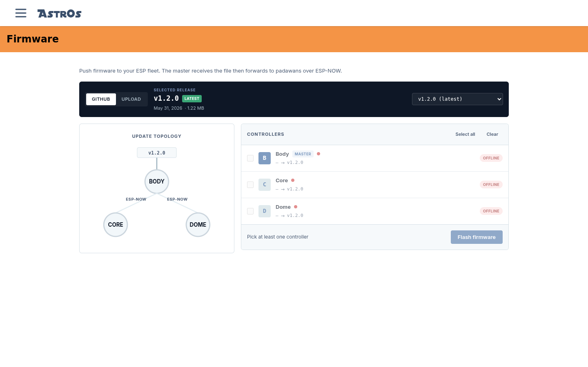

Update your fleet, wirelessly.
You only ever flash over USB once. After
that, the Firmware screen pushes new AstrOs.ESP releases to your
whole fleet over the air — the server sends the file to the master, and the master forwards it to
every padawan over ESP-NOW.

§Pick a source
The strip at the top chooses what to push:
- GitHub — pulls the official
AstrOs.ESPreleases straight from GitHub. Pick one from the dropdown; the newest is tagged Latest and test builds are tagged Pre-release. - Upload — push your own build instead. Use the app image
(
metro_s3-app.bin) from your PlatformIO build — the full-flash.binimage is only for USB flashing.
§Pick your controllers
The Controllers list shows every node with its current version and what it would
move to (1.1.0 → 1.2.0). Tick the ones to update — or Select all —
and the action bar sums up what will be pushed. A few guard rails:
- Offline nodes can't be selected. Power everything on first — the Update topology diagram and the status dots show who's reachable.
- Up-to-date nodes are marked, so you don't re-flash for nothing.
- Downgrades are blocked by default. To push an older version, switch on Allow downgrades — it resets when you reload the page, so it can't be left on by accident.
§Flash
Select Flash firmware and confirm. The dialog restates the source and targets and warns about power for a reason:
Don't cut power to any selected controller until the update completes and the node reboots — interrupting a flash can leave a controller bricked. (If that happens, recover it over USB.)
The update then walks through its stages, live: Download (the master receives the file), Transfer and Receive (master → padawans over ESP-NOW), Flash (write the firmware), Verify (checksum) and Reboot. Each controller shows its own progress, and it's safe to refresh or leave the page mid-update — coming back rejoins the running job. Only one update can run at a time; if someone else is mid-flash, the screen says so and waits.
§Did it take?
When the job finishes you'll get ✓ All controllers updated — or a failure bar naming which node failed at which stage. A failed node is usually just a flaky link: check its power and ESP-NOW range, then run the update again for that node. Afterwards, glance at the Status dashboard — every node should be green on the new version.